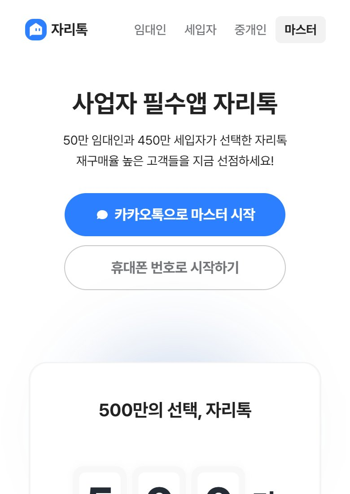
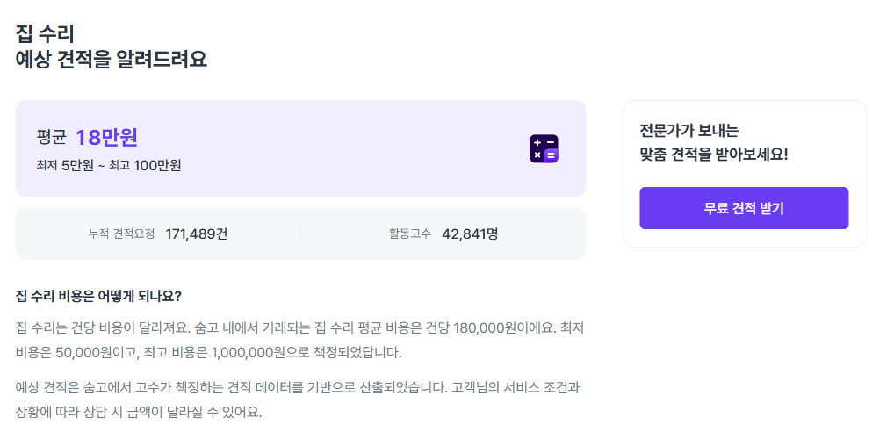
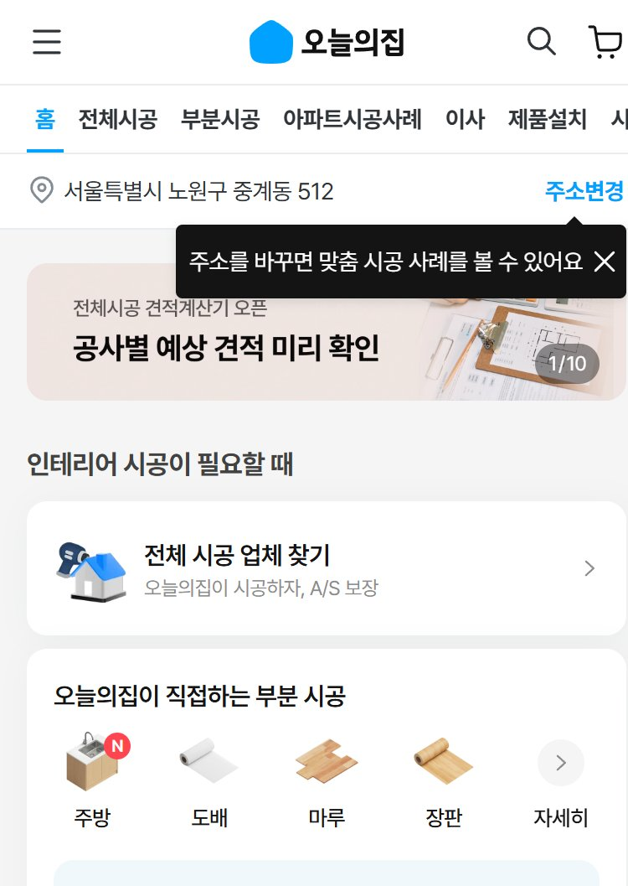
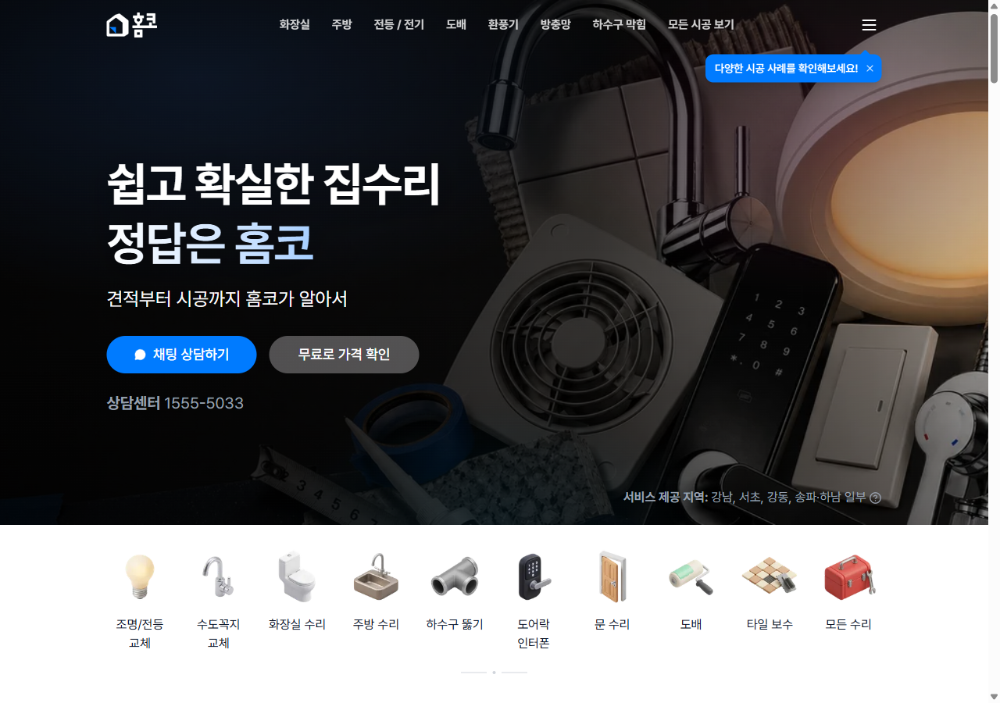
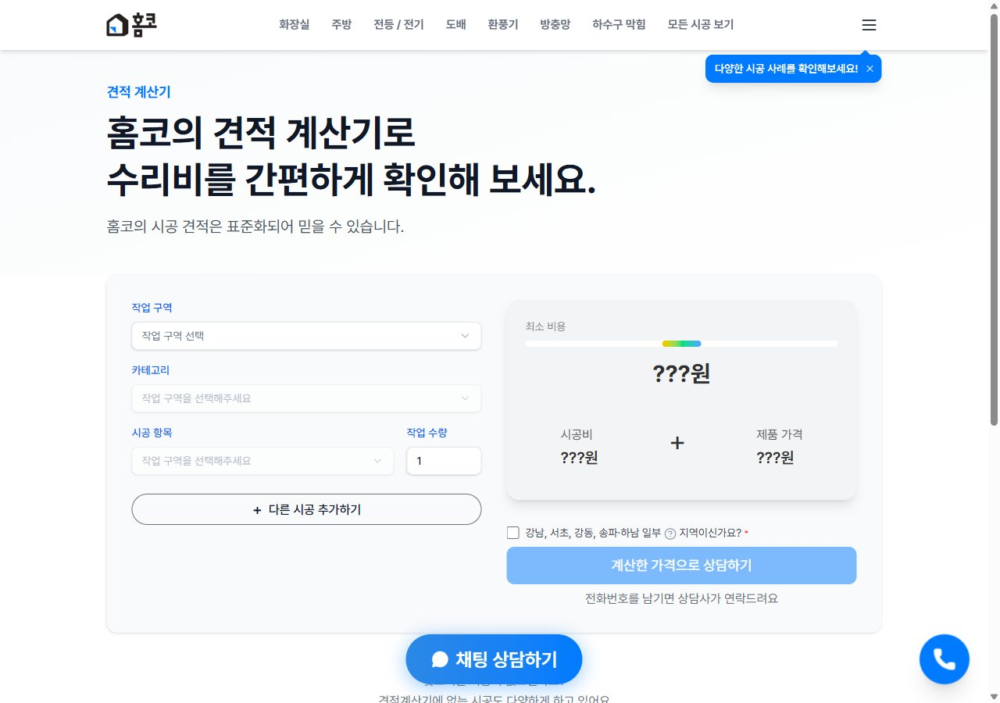
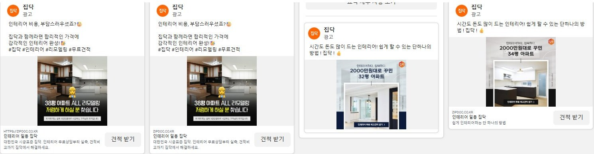
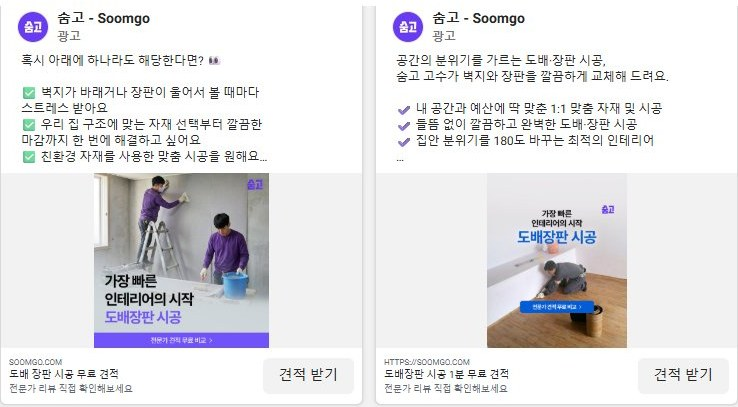

숨고·오늘의집·홈코 등 인테리어 경쟁사를 살펴보고, 자리톡만 할 수 있는 수리 서비스와 그 매출을 8주 안에 실제 결제로 확인하는 방법을 말씀드립니다.
1,000개 분야 견적 앱입니다. 숨고의 "견적 보낼 때마다 돈 받기"는 업체 불만 1위입니다
집주인 70만·세입자 600만을 모두 가진 곳은 자리톡뿐입니다
가짜 문 → 가격 문 → 실제 결제. 돈을 내는지 눈으로 확인합니다
이도형 · 그로스 마케터 | ← → 키로 넘기기 · F 전체 화면
오늘 요청드릴 것 · 숨고식 "견적 과금" 대신 "정찰가(미리 정한 고정 가격) + 완료 수수료" 방향으로 8주 테스트를 승인해 주세요. 앱 배너 2자리, 지역 1곳, 테스트 예산 약 300만 원 [가정]이 필요합니다.
숨고의 순위, 돈 버는 방법, 그 방법의 부작용
오늘의집·홈코·집닥·당근·해외 사례, 광고 속 약속
검색 데이터, 임대 집 수리가 어려운 이유
경쟁사에서 무엇을 가져와 어떻게 합칠까
세입자·집주인·업체 화면 흐름, 단계, 지킬 선
앱 안의 순간, 메시지, 검색 광고, 업체 모집
매출 공식, 3가지 경우, 매출과 이익의 차이
8주 동안 3단계로 "돈을 내는지" 확인
결정 4가지와 다음 단계

바로 고칠 것 1개 · 첫 화면(랜딩)의 "50만 임대인·450만 세입자"는 옛 숫자입니다. 최신 보도는 70만·600만입니다 [제3자, 2026-10].
주의: 오늘의집 숫자에는 가구 쇼핑이 많이 섞여 있습니다. 숨고 숫자에는 레슨·과외·이사가 섞여 있습니다. 그래서 검색 수만으로 "인테리어 1위"를 정할 수는 없습니다.
오늘의집 → 한샘몰 → 이케아 → 자주 → 집꾸미기 순입니다. 오늘의집이 약 80%를 차지합니다. 숨고와 집닥은 순위에 없습니다.
모바일인덱스 2023-10, 안드로이드 [제3자]
1,000개가 넘는 분야의 견적을 연결합니다. 숨고 본인 광고 52개 중 인테리어·수리 광고는 약 15개(30%)뿐입니다. 나머지는 레슨·이사·과외·보험입니다.
메타 광고 라이브러리 [직접 확인 2026-11-12]
한 줄 결론 · 숨고는 "아무 일이나 사람을 부르는" 시장의 강자입니다. 인테리어·수리만 놓고 보면 1위라는 증거는 찾지 못했습니다.
잘 되는 이유 · 업체가 돈을 미리 충전해 두고, 견적을 보낼 때 빠집니다. 거래가 되든 안 되든 숨고는 돈을 법니다. 그래서 1,000개 분야로 넓히기 쉽습니다.
약점 · 숨고는 "연결"까지만 돈을 받습니다. 그래서 시공이 잘 끝났는지 챙길 이유가 약합니다. 다음 장에서 그 결과를 봅니다.

왜 중요한가 · 집수리는 레슨과 다릅니다. 한 번 잘못되면 물이 새고, 보증금 다툼이 생깁니다. "연결만 하고 결과는 모른다"는 방식이 수리에서는 가장 약한 고리입니다.
한 줄로 · 숨고의 "업체 모으기"는 배우고, "돈 받는 방식"과 "책임지는 방식"은 다르게 갑니다.
| 방식 | 대표 회사 | 돈 버는 법 | 주 손님 | 믿음 장치 | 한계 |
|---|---|---|---|---|---|
| 견적 과금형 | 숨고, 당근 동네업체 | 업체가 견적·광고에 돈을 냄 | 누구나 | 후기, 프로필 | 결과 책임 약함, 임대 상황 모름 |
| 중개형 | 오늘의집, 집닥 | 업체 광고·중개 수수료, 쇼핑 | 집 가진 사람 | 시공 책임 보장, 표준 계약서 | 큰 공사 위주, 작은 수리는 남는 게 적음 |
| 직영형 | 홈코, 아파트멘터리 | 직접 시공해 남기는 차익 | 집 가진 사람(+기업) | 정해진 가격, 1년 A/S | 지역·인력을 늘리기 어려움 |
| 관리 연계형 | 직방·다방 우리집, 해외 Latchel | 구독, 수수료 | 집주인, 관리 회사 | 계약·납부 관리 | 국내는 수리 연결이 약하거나 제휴 수준 |
| 자리톡 마스터 (제안) | 관리 연계형 + 장점 결합 | 정찰가 수리 완료 수수료 + 카드 결제 | 집주인과 세입자 둘 다 | 가격 먼저, 책임 보장, 수리 기록 | 업체 품질 관리가 숙제 → 테스트로 확인 |
눈여겨볼 점 · 견적 과금형과 중개형은 손님을 "집 1채의 주인 1명"으로 봅니다. 세입자가 살고, 집주인이 돈을 내는 집은 어느 방식도 제대로 다루지 않습니다.



자리톡에 주는 힌트
가격은 홈코처럼 먼저, 업체는 숨고처럼 넓게. 둘을 합치면 전국에서도 정찰가가 가능합니다.

집닥 메타 광고 · "합리적인 가격" "2000만원대로 꾸민 32평"큰 리모델링 사례 중심(1천만~7천만 원 필터). 활성 광고 7개, 구글 광고 0개. 업체 보증보험 여부를 보여 줍니다.
지도에 동네 업체가 뜹니다. 에어컨 수리 견적 요청이 한 달에 265% 늘기도 했습니다 [자사발표, 2024-05]. 결과 책임은 없습니다.
직영점 14곳, 고가 리모델링. 만족도는 높지만 세입자·작은 수리와는 거리가 멉니다.
집꾸미기(2025-03), 알렛츠(2024-08), 문고리닷컴(2024-07), 어반베이스(2024-07), 하우스앱(2023-02)
공정위(공정거래위원회)는 2024년 인테리어 플랫폼 6곳의 "중개 책임 없음" 약관 84개를 고치게 했습니다
→ 자리톡: 수수료를 숨기지 않고 영수증에 나눠 보여 줍니다
→ 자리톡: 숨고식 견적 과금은 미국에서도 한계가 드러난 길입니다
교훈 · 홈서비스 시장은 "연결해 주고 돈 받기"에서 "가격을 정하고 결과까지 책임지기"로 움직이고 있습니다.

숨고 · "도배장판 시공 1분 무료 견적""도배 장판" 검색 광고 12개 중 보증·완공 날짜를 약속한 광고 0개
| 회사 | 광고가 약속하는 것 | 보증·책임 |
|---|---|---|
| 숨고 | 1분 무료 견적, 최대 10개 비교, 리뷰 확인 | 없음 |
| 집닥 | 합리적 가격, 쉽게, 후기, "시공표준" | 없음 |
| 오늘의집 | 가구 할인·쿠폰 (시공 광고 0개) | 광고엔 없음, 페이지엔 있음 |
| 인테리움 등 | 동네 전문가, 전자계약 | 없음 |
| 자리톡 | 월세 카드결제·환급·단기임대 (수리 광고 0개) | 해당 없음 |
| 빈자리 | 확정 가격 · 고친 뒤 책임 · 누가 낼지 정리 → 아무도 말하지 않음 | |
재미있는 점 · "원룸 인테리어" 광고 110개 중 약 60%는 삼삼엠투의 "공사하는 동안 잠깐 살 집"입니다. 자리톡 단기임대도 같은 말을 합니다. 공사와 단기임대는 이미 붙어 있습니다.
| 가격을 먼저 안다 | 문제 생기면 회사가 책임 | 작은 수리 (수전·도어락) | 전국 | 집주인–세입자 연결 | 누가 낼지 정리 + 수리 기록 | |
|---|---|---|---|---|---|---|
| 숨고 | 평균만 | ✕ | ○ | ○ | ✕ | ✕ |
| 오늘의집 | 계산기 | ○ | 일부 | ○ | ✕ | ✕ |
| 홈코 | ○ | 1년 | ○ | 강남권 | ✕ | ✕ |
| 집닥 | 사례 | 보증보험 | ✕ | ○ | ✕ | ✕ |
| 당근 동네업체 | ✕ | ✕ | ○ | ○ | ✕ | ✕ |
| 자리톡 마스터 (제안) | ○ | ○ | ○ | ○ | ○ | ○ |
읽는 법 · ○ 한다 / ✕ 안 한다 / 그 밖은 일부만. 앞의 4칸은 경쟁사에서 배워 오는 칸이고, 뒤의 2칸은 자리톡만 채울 수 있는 칸입니다.
뜻 · "세입자인데 이거 누가 고쳐요?"라는 고민은 검색창에 안 나옵니다. 그래서 검색 광고로는 이 손님을 골라낼 수 없습니다.
그 순간은 자리톡 앱 안에 있습니다. 월세를 내고, 고지서를 받고, 계약이 끝나는 화면. 숨고·오늘의집은 볼 수 없는 자리입니다.
계절 주의: 입주청소는 이사철(봄·가을), 보일러는 겨울, 곰팡이는 장마철에 몰리는 경향이 있습니다 [월별 수치 미확인]
"누가 내나"의 기본 원칙
오래 써서 낡은 것(벽지 변색, 장판 눌림)은 세입자가 물어낼 의무가 없고, 세입자가 망가뜨린 것은 세입자 책임입니다. [법률 칼럼, 사안마다 다름]
수선 의무는 대개 집주인에게 있어서, 정찰가 안의 수수료도 결국 집주인이 냅니다. 집주인이 그 값을 낼 이유가 있어야 합니다
그래서 첫 손님은 · 집 가까이 사는 집주인이 아니라 멀리 살거나 호실이 많은 집주인입니다. 정찰가는 숨고 평균(18만 원)보다 높지 않게 맞춥니다.
집주인이 관리하는 호실에는 요청을 보낼 길이 이미 있습니다. 세입자까지 앱에 있는 호실 수는 [사내 확인 필요]입니다.
카드 결제·할부가 이미 있습니다. 목돈이 드는 수리비도 할부로 나눠 낼 수 있습니다.
카톡 고지서가 매달 나갑니다. 광고비 없이 집주인을 만날 자리가 있습니다.
계약·납부 기록이 있습니다. 여기에 수리 기록을 더하면 퇴거 때 다툼을 줄입니다.
마스터 브랜드 5개와 "수리 민원 접수" 기능이 이미 있습니다. 잇기만 하면 됩니다.
별 5개 리뷰 11건이 "집주인 동의·연락 없이 카드로 월세를 낸다"를 장점으로 꼽았습니다.
집주인 연락 불만 8건. 약속을 어겼다는 분노입니다.
그래서 마스터의 두 가지 철칙
① 집주인에게는 세입자가 "보내기"를 누를 때만 보냅니다.
② 수리 알림은 내 집에 일이 있을 때만, 새 채널은 만들지 않습니다.
자리톡 마스터만의 강점 (USP)
사진 한 장이면, 가격은 먼저 · 누가 낼지는 정리 · 책임은 끝까지
버리는 것 · 숨고의 견적 과금, "알아서 비교하세요", "중개만 해요"
안 하는 것 · 오늘의집처럼 직접 시공하지 않습니다. 업체는 그대로, 약속과 정산만 자리톡이 맡습니다
작은 수리 메뉴마다 정찰가를 미리 보여 줍니다. 현장에서 값이 바뀌면 다시 승인을 받아야만 진행합니다.
푸는 걱정 · 집주인 "바가지 아닐까?"
가져온 곳 · 홈코, 숨고 평균가
사진과 품목을 보고 "보통 누가 내는지" 가이드를 보여 줍니다. 집주인 부담 / 세입자 부담 / 나눠 내기 중 둘이 앱에서 정합니다.
푸는 걱정 · 세입자 "말 꺼내기 눈치 보여"
가져온 곳 · 자리톡만 (양쪽 연결)
돈은 고친 뒤 업체에 넘깁니다. 같은 문제가 다시 생기면 무료로 다시 고칩니다(기간은 품목별). 완료 사진은 집 기록으로 남습니다.
푸는 걱정 · 모두 "고친 뒤 연락 끊기면?"
가져온 곳 · 오늘의집, Latchel
| 단계 | 숨고식 (지금 참고한 방식) | 자리톡 마스터식 (제안) |
|---|---|---|
| 손님이 하는 일 | 요청서 작성 → 견적 최대 10개를 받아 직접 비교 | 사진 1장 + 품목 고르기 |
| 가격을 아는 때 | 견적을 다 받은 뒤, 현장에서 바뀔 수 있음 | 요청하는 순간 정찰가 확인 |
| 집주인 | 등장하지 않음 (세입자가 따로 연락) | 세입자가 "보내기"를 누르면 앱에서 1번 승인 |
| 돈 내는 때 | 업체와 따로 정함 | 미리 결제(카드·할부) → 고친 뒤 업체에 지급 |
| 업체가 돈 내는 때 | 견적 보낼 때마다 (계약 안 돼도) | 일을 끝냈을 때만 수수료 |
| 문제가 생기면 | "저희는 중개만 해요" | 업체 의무 + 적립금으로 무료로 다시 (자리톡이 챙김) |
| 끝난 뒤 | 리뷰 1개 | 완료 사진 + 비용 분담이 집 기록에 저장 → 퇴거 때 증거 |
핵심 차이 · 숨고식은 "고를 수 있게" 해 주고, 마스터식은 "끝나게" 해 줍니다. 수리를 잘 모르는 집주인·세입자에게 필요한 것은 끝나는 쪽입니다.
왜 작은 수리부터인가 · 숨고 집수리 평균은 18만 원입니다. 금액이 작아 집주인이 빨리 승인하고, 업체 품질 문제도 작게 시험할 수 있습니다. 큰 인테리어는 오늘의집 영역이라 뒤로 미룹니다.
그다음 · 예약 시간 고르기 → 업체 방문 → 완료 사진 확인 → "다시 고장 나면 무료로 다시" 안내 → 집 기록에 저장
집주인이 거절하면? · 세입자에게 "직접 진행(본인 부담)" 또는 "다시 요청"을 보여 줍니다. 승인 비율과 걸린 시간을 테스트에서 잽니다
숨고 리뷰에서 다른 앱(크몽·당근)으로 옮긴다는 업체 최소 6건 [직접 확인]
대신 업체가 지킬 것 · 정찰가 지키기(바뀌면 재승인), 사업자·보험 정보 공개, 완료 사진 올리기, 다시 고침 의무. 지키지 않으면 배정을 줄입니다.
| 상황 (예시) | 보통 누가 내나 | 앱이 묻는 것 |
|---|---|---|
| 오래돼서 바랜 벽지 | 집주인 | 입주 때 사진이 있나요? |
| 오래 써서 샌 수전 | 집주인 | 언제부터 샜나요? |
| 떨어뜨려 깨진 세면대 | 세입자 | 본인 부담으로 진행할까요? |
| 보일러 고장 | 대개 집주인 | 점검 기록이 있나요? |
| 욕실 곰팡이 | 원인에 따라 | 환기·누수 여부 사진 |
| 못 자국·스티커 | 특약에 따라 | 계약서 특약 확인 |
예시: 8년 된 도배를 100만 원에 새로 하면, 낡은 만큼을 빼고 세입자 몫은 약 20만 원이라는 계산이 소개됩니다 [법률 칼럼 예시]
입주할 때 방마다 사진을 찍어 두면, 퇴거 때 "원래 있던 하자"를 증명합니다. 보증금을 지키는 기능이라 세입자가 먼저 켤 이유가 있습니다.
마스터로 고친 내역·사진·누가 냈는지가 집에 쌓입니다. 집주인에게는 호실 장부, 세입자에게는 증거입니다.
선 긋기 · 가이드는 "참고"로만 표시하고, 다툼이 크면 분쟁조정위원회를 안내합니다. 자리톡이 판결하지 않습니다.
자동 연락은 없습니다. 자리톡 리뷰 1점의 이유를 반복하지 않습니다.
현장에서 값이 오르면 사진과 이유를 올리고, 돈 내는 사람이 다시 눌러야 진행합니다.
결제 대행사(PG)의 에스크로(돈 맡아 두기)를 씁니다. 자리톡은 중개자로 남고, 다시 고침은 업체 의무입니다.
사업자·보험·면허를 보여 줍니다. 면허가 필요한 보일러(가스)·전기 품목은 1단계에서 뺍니다.
공정위가 고친 "중개 책임 없음" 약관을 쓰지 않습니다. 자리톡이 지는 책임을 분명히 적습니다.
"누가 내나"는 참고 정보입니다. 다툼은 분쟁조정위원회 등 공식 창구로 안내합니다.
하지 않을 것 · 수리 이야기를 카톡 광고로 따로 보내지 않습니다. 결제 화면과 홈 카드처럼 이미 보고 있는 화면에만 띄웁니다.
대상: 멀리 사는 집주인, 호실이 여러 개인 집주인
자리: 고지서 화면의 "수리 요청" 카드
대상: 수리비가 부담인 집주인
자리: 승인 화면, 연말 수리 장부 요약
대상: 퇴거 예정 집주인
자리: 계약 만료 60일 전 알림, 공실 등록 화면
호실이 많은 집주인 상위 그룹에게 직접 연락해 "건물 단위 수리 관리"를 제안합니다. 3단계 구독의 첫 손님입니다.
"원상복구, 어디까지 받을 수 있나", "겨울 동파 미리 막기" 같은 글로 신뢰를 쌓고, 글 끝에 정찰가 메뉴를 붙입니다.
재는 숫자
승인 비율 · 승인까지 걸린 시간 · 공실 기간(퇴거~재입주)
| 키워드 | 월 검색 | 경쟁 | 보여 줄 화면 |
|---|---|---|---|
| 입주청소 | 48,210 | 높음 | 원룸 입주청소 정찰가 + 입주 사진 기록 |
| 누수 | 21,160 | 높음 | "윗집·우리 집 누가 내나" 가이드 |
| 곰팡이제거 | 4,910 | 높음 | 욕실 곰팡이 정찰가 |
| 부분도배 | 2,790 | 높음 | 방 1칸 도배 정찰가 |
| 수전교체 | 2,530 | 중간 | 수전 교체 정찰가 |
| 원상복구 | 2,450 | 높음 | 퇴거 원상복구 비용 정리 |
| 보일러수리 | 2,340 | 높음 | 겨울 점검 + 수리 |
왜 나중인가 · 이 키워드들은 경쟁이 "높음"이라 클릭이 비쌉니다. 앱 안 테스트로 실제 결제 비율을 먼저 확인한 뒤, 돈 내고 데려올 가치가 있는지 계산합니다.
가격·결제가 끝난 일만 보내 드립니다 · 다음 날 정산 · 같은 건물 일을 묶어서
= 5만 건 × 18만 원 = 거래액 90억
× 12% = 수수료 매출 10.8억
카드 이용료(약 1.3억)는 뺐습니다. 정찰가에 4.9%를 더 받으면 "정해진 가격" 약속과 어긋나고, 수수료를 손님에게 넘기는 것은 법 검토가 필요합니다.
기준안 연 매출 ≈ 10.8억
2025 자리톡 매출 125억의 약 9%입니다
| 보수안 | 기준안 | 공격안 | |
|---|---|---|---|
| 마스터로 고치는 비율 [가정] | 2% | 5% | 10% |
| 1년 고친 건수 | 2만 건 | 5만 건 | 10만 건 |
| 거래액 (× 18만 원) | 36억 | 90억 | 180억 |
| 완료 수수료 매출 (× 12%) | 4.3억 | 10.8억 | 21.6억 |
| 카드 이용료 (법무 확인 전 제외) | 제외 | 제외 | 제외 |
| 합계 매출 | 4.3억 | 10.8억 | 21.6억 |
| 2025 자리톡 매출 125억 대비 | +3% | +9% | +17% |
숨고식으로 하면? · 5만 건을 고치려면 요청이 약 16.7만 건 필요합니다(결제 30% 가정). 업체 5곳 × 3,500원이면 약 29억, 숨고식이 더 큽니다. 그래도 수수료 방식을 고르는 이유는 업체가 남고, 손님에게 책임을 약속할 수 있어서입니다. 업체 수락률로 확인합니다.
매출이 커지는 길 · 건수(앱 안 순간) → 건당 금액(이사 패키지) → 반복(구독). 2·3단계 매출은 이 표에 넣지 않았습니다.
빠진 것 · 인건비, 업체 모집, 부가세, 환불. 주의: 9만 원 수전 1건에 할인을 주면 1건당 약 -6,000원입니다. 그래서 할인은 15만 원 이상에만 줍니다.
그래서 테스트의 핵심 판정은 "매출이 나나"가 아니라 "1건마다 이익이 남나"입니다.
수리 장부가 쌓일수록 다른 앱으로 옮기기 어렵습니다. 재는 숫자: 수리 이용 집주인의 6개월 뒤에도 남은 비율
[미검증] 테스트에서 측정퇴거 뒤 바로 고치고 단기임대로 채웁니다. 광고 110개 중 60%가 "공사 중 잠깐 살 집"일 만큼 둘은 붙어 있습니다
[미검증] 공실 기간 비교수리비를 카드·할부로 냅니다. 월세 말고 두 번째 결제 이유가 생깁니다
[미검증] 할부 조건은 법무·재무 확인입주·퇴거 사진과 수리 기록이 증거가 됩니다. 분쟁 1위(보증금)와 2위(수선)를 같이 줄입니다
[미검증] 퇴거 문의 수"집주인 몰래"의 약속을 지키면서 쓸모가 하나 늘어납니다. 알림이 아닌 기능으로 앱을 엽니다
[미검증] 리뷰 주제 변화정찰가를 지키는 업체가 모이면, 이사·청소·인테리어로 넓힐 때 다시 모을 필요가 없습니다
[미검증] 업체 재참여율| 재는 숫자 | 통과 기준 [가정] |
|---|---|
| 카드를 본 사람 중 누른 비율 | 2% 이상 |
| 누른 사람 중 대기 등록 비율 | 25% 이상 |
| B안 등록률 ÷ A안 등록률 | 1.2배 이상 → 손님 문구는 B가 맞음 |
| 카드 닫기·차단 비율 | 평소 화면 수준과 비슷 |
무엇을 답하나 · 손님 쪽 문구는 이 A/B로, 업체 쪽 돈 받는 방식(견적 과금 vs 완료 수수료)은 업체 10곳 인터뷰와 수락률로 따로 잽니다.
| 재는 숫자 | 통과 기준 [가정] |
|---|---|
| "이 가격이면 할게요"를 고른 비율 | 40% 이상 |
| 1년 보장(+1만 원)을 고른 비율 | 참고 · 높으면 "책임"이 돈이 됨 |
| 할부를 고른 비율 | 참고 · 자리페이 연결 근거 |
| "비싸요"를 고른 품목 | 그 품목 가격을 다시 정함 |
Buffer 방식 · 서비스를 만들기 전에 가격 선택 화면을 먼저 열어 "얼마를 낼 마음이 있나"를 잰 방법입니다. 결제는 받지 않습니다.
가격 정하는 법 · 숨고 집수리 평균 18만 원, 5만~100만 원 범위를 기준으로, 업체 10곳에 원가를 물어 정합니다.
"매출이 난다"의 증명 · 실제 결제 금액과 수수료를 4주 동안 모아, 1년 매출을 범위로 다시 계산합니다. 앞의 [가정]을 실제 숫자로 바꿉니다.
| 재는 숫자 | 통과 기준 [가정] |
|---|---|
| 요청 → 결제 | 30% 이상 |
| 결제 → 수리 완료 | 90% 이상 |
| 완료 후 별점 | 4.5 이상 |
| 다시 고침 발생 | 5% 이하 |
| 집주인 승인까지 걸린 시간 (가운데 값) | 24시간 이내 |
| 업체 배정 수락률 | 70% 이상 |
| 1건당 이익 (수수료 − 할인 − 상담·다시 고침 비용) | 0원 이상 |
정식 화면 개발, 지역 3곳으로 넓히기, 2단계(이사 패키지) 준비
가격·품목·누가 내는지 흐름을 고쳐 테스트 2~3을 다시
수리는 접고 마스터는 이사·청소 중심으로. 8주·약 300만 원으로 큰 개발 비용을 아낍니다
다음 화면 첫 줄에 아직 준비 중이라고 적습니다. 숨기지 않습니다.
결제는 테스트 3에서만, 실제로 고칠 때만 받습니다.
가짜 문 단계에서는 어떤 연락도 집주인에게 가지 않습니다.
약속한 할인(테스트 지역 첫 100명)은 문을 열 때 반드시 줍니다. 조건은 처음부터 적습니다.
이미 보는 화면의 카드만 씁니다. 알림 불만을 키우지 않습니다.
품목·동네만 묻고, 테스트가 끝나면 쓰지 않은 정보는 지웁니다.
숨고식 "견적 과금" 대신 "정찰가 + 완료 수수료"로 테스트하는 것을 승인해 주세요. 두 안을 반반 보여 주는 A/B 비교로 확인합니다.
세입자 월세 결제 완료 화면과 집주인 고지서 화면에 카드 1개씩, 2주 동안 띄우게 해 주세요.
개발 1명 2주(카드·대기 등록 화면), 운영 1명 4주(테스트 3 배정·정산) [가정]이 필요합니다.
약 300만 원 [가정]: 첫 수리 할인 100만 · 다시 고침 예비비 100만 · 업체 첫 일감 보장 50만 · 예비 50만. 테스트 지역 1곳과 마스터 업체 10곳 협조도 부탁드립니다.
테스트 전에 사내에서 받아 채울 숫자 · ① 세입자까지 앱에 있는 호실 수 ② 수리 민원 접수 월 건수 ③ 마스터 주문·업체 수와 지금 업체에게 받는 돈 ④ 배너 자리의 지금 수익. 받는 대로 매출 가정을 고칩니다.
정찰가, 바뀌면 다시 승인
보낼지는 세입자가, 승인은 집주인이
고친 뒤 지급, 다시 고침, 집 기록
만들기 전에 실제 결제로 확인
이도형 · 그로스 마케터 | 다음 장부터 부록(예상 질문 · 출처)
원자료는 덱 폴더의 research/에 따로 보관했습니다(배포 안 함)